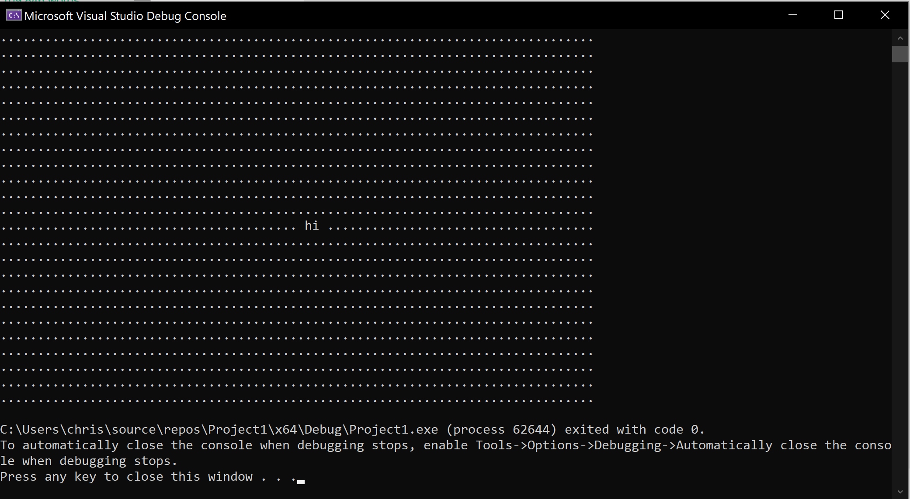

how to control the terminal's cursor with C++
Ever wanted to move the cursor up while printing output in a program? You can. Here's how:
cout << "\x1b[A";That moves the cursor up one line. You can move it up by as many lines as you want; here's how to move it up by 3 lines:
cout << "\x1b[3A";A variable works there too:
int up_count = 3;
cout << "\x1b[" << up_count << "A";You can also move the cursor down, right, and left.
cout << "\x1b[A"; // up
cout << "\x1b[B"; // down
cout << "\x1b[C"; // right
cout << "\x1b[D"; // leftThese are called ANSI escape codes, and similar ones let you change your output text's color and style. (See [§] how to use colors in terminals.)
Next to a cursor movement code you can put another or a message:
cout << "\x1b[A\x1b[C this made the cursor go up and right";Below is some simple cross-platform code you are free to use to make controlling the cursor easier. More fully-featured ways to control the cursor are not cross-platform; one example for Windows is at the end of this page.
#include <iostream>
#include <string>
using namespace std;
void print_at(unsigned x, unsigned y, string message);
void set_cursor_coords(unsigned x, unsigned y);
void floor_cursor();
void ceil_cursor();
const int MAX_WIDTH = 80;
const int MAX_HEIGHT = 24;
int main() {
for (int i = 0; i < MAX_HEIGHT; i++) {
for (int j = 0; j < MAX_WIDTH; j++)
cout << ".";
cout << endl;
}
print_at(40, 12, " hi ");
floor_cursor();
return 0;
}
void print_at(unsigned x, unsigned y, string message) {
/* Prints a message at chosen coordinates. */
set_cursor_coords(x, y);
cout << message;
}
void set_cursor_coords(unsigned x, unsigned y) {
/* Moves the terminal's cursor to chosen coordinates.
In this coordinate system, x increases to the right
and y increases downward.
*/
ceil_cursor();
cout << "\x1b[" << y << "B";
cout << "\x1b[" << x << "C";
}
void floor_cursor() {
/* Moves the terminal's cursor to the bottom left corner of the terminal window. */
ceil_cursor();
cout << "\x1b[" << MAX_HEIGHT << "B";
}
void ceil_cursor() {
/* Moves the terminal's cursor to the top left corner of the terminal window. */
cout << "\x1b[" << MAX_HEIGHT << "A\x1b[" << MAX_WIDTH << "D";
}This is the output of the above code:

All of the dots were printed first. Then the cursor was moved up and to the middle of the all the dots and the message, " hi ", was printed, overwriting the dots that were there. The dots to the left of the new message were left untouched.
controlling the terminal's cursor with windows.h
windows.h is a header file available on all Windows computers that gives you a lot of control over the operating system. Other platforms may be able to get and use this header file, but it is (at least usually) not installed by default unlike other similar but different header files specifically made for those platforms. You can include windows.h into your code with #include <windows.h>.
Below is an example of how to make a rotating half-circle as a loading symbol using windows.h's SetConsoleCursorPosition, Sleep, and other functions including ones that allow detecting the size of the terminal window.

#include <windows.h>
#include <iostream>
#include <string>
const long double PI = 3.14159265359;
struct Coord {
int x;
int y;
Coord(int new_x, int new_y) {
x = new_x;
y = new_y;
}
};
void show_loading_symbol(Coord window_size, HANDLE handle);
double degrees_to_radians(double degrees);
HANDLE get_std_handle();
Coord get_window_size(HANDLE handle);
void show_cursor(bool choice, HANDLE handle);
void print_at(short x, short y, std::string message, HANDLE handle);
int main() {
HANDLE handle = get_std_handle();
Coord window_size = get_window_size(handle);
show_cursor(false, handle);
show_loading_symbol(window_size, handle);
return 0;
}
void show_loading_symbol(Coord window_size, HANDLE handle) {
int radius = 12;
int center_x = window_size.x / 2;
int center_y = window_size.y / 2;
double theta1 = 0; // in radians; for printing the circle
double theta2 = PI; // in radians; for erasing the circle
for (int i = 0; ; i++) {
// A circle's coordinates can be found with these formulas:
// x = radius * cos(theta)
// y = radius * sin(theta)
int x1 = int(radius * cos(theta1)) + center_x;
int y1 = int(radius * sin(theta1)) + center_y;
int x2 = int(radius * cos(theta2)) + center_x;
int y2 = int(radius * sin(theta2)) + center_y;
print_at(x1, y1, "*", handle); // Print the circle.
print_at(x2, y2, " ", handle); // Erase the circle.
theta1 += degrees_to_radians(1);
theta2 += degrees_to_radians(1);
if (i % 5 == 0)
Sleep(1);
}
}
double degrees_to_radians(double degrees) {
return degrees * 2 * PI / 360;
}
HANDLE get_std_handle() {
HANDLE handle = GetStdHandle(STD_OUTPUT_HANDLE);
if (handle == INVALID_HANDLE_VALUE)
throw "Error: Invalid handle value.";
return handle;
}
Coord get_window_size(HANDLE handle) {
CONSOLE_SCREEN_BUFFER_INFO buffer_info;
GetConsoleScreenBufferInfo(handle, &buffer_info);
int columns = buffer_info.srWindow.Right - buffer_info.srWindow.Left + 1;
int rows = buffer_info.srWindow.Bottom - buffer_info.srWindow.Top + 1;
return Coord(columns, rows);
}
void show_cursor(bool choice, HANDLE handle) {
CONSOLE_CURSOR_INFO cursor_info;
GetConsoleCursorInfo(handle, &cursor_info);
cursor_info.bVisible = choice;
SetConsoleCursorInfo(handle, &cursor_info);
}
void print_at(short x, short y, std::string message, HANDLE handle) {
SetConsoleCursorPosition(handle, { x, y });
std::cout << message;
}